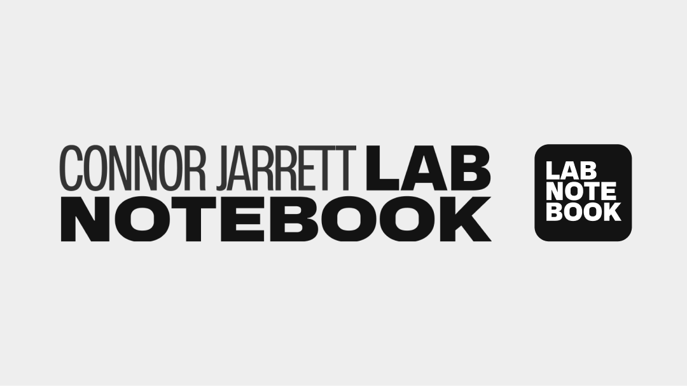
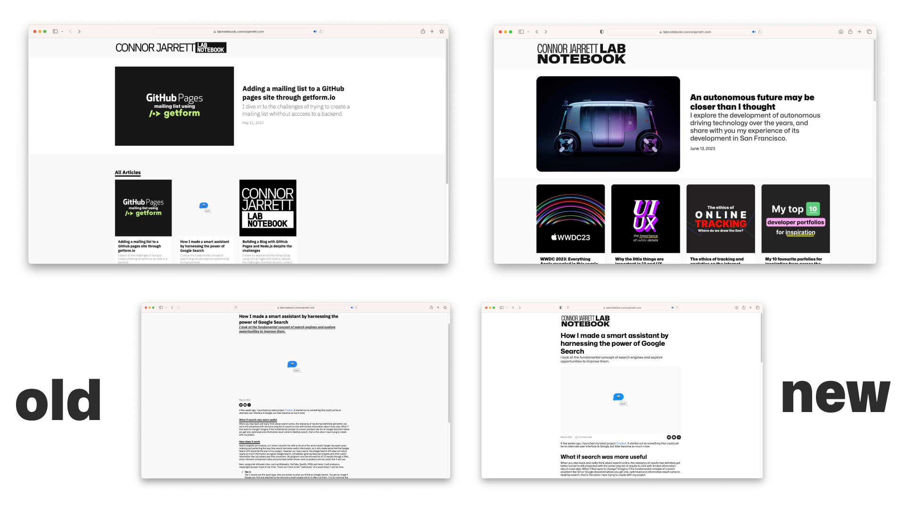
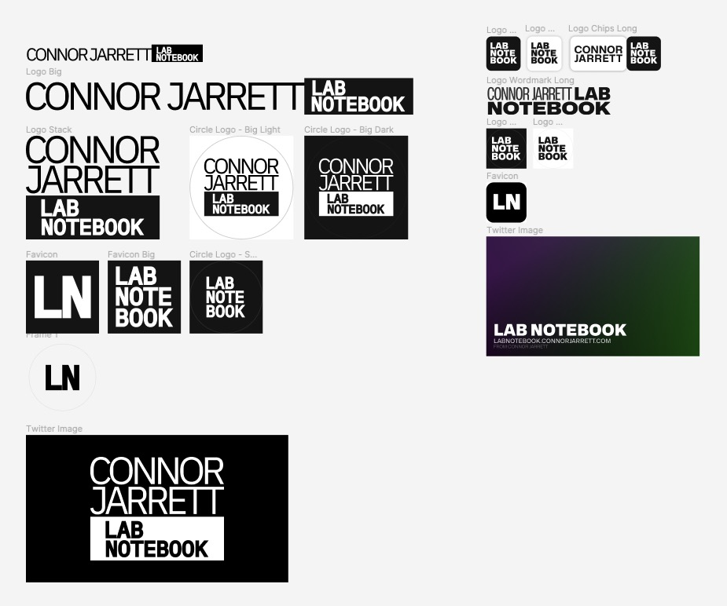

Lab Notebook may be less than 2 months old, but me being me, I've already found thousands of ways to change the appearance of it. This week I shipped Lab Notebook's biggest overhaul since I released it, and I'm going to break down some of those changes, why they matter and my design process.
The Logo

The new Lab Notebook logo was designed to reflect the new, more rounded and friendly user interface. The old logo used a Monospace font and hard sharp corners, whilst this logo reflects the new Mona/Hubot Sans typeface and adopts rounded corners in the icon.
The new User Interface

The new user interface does a lot in rounding off the corners and making content more readable and accessible. Some of the key changes include:
- Font sizes are now larger
- Font is thicker for readability
- Underlines are less common to avoid confusion that a title is a link
- Italics have been used less
- Background colour adjusted to allow images to show better
- The site is more responsive and fits better on phones
- Dates are now shown on all articles on the homepage
- YouTube embeds and Image embeds are now rounded the same
Black tones on articles have also been adjusted to create a softer/lighter shade depending on importance without standing out.
As well as this, the homepage has been updated to have multiple sections rather than just an "All Articles section"
Design Process

The design process for the Lab Notebook logo took lots of consideration and failed attempts. The first logo introduced the black and white colour scheme that is still present now, but it was based heavily on monospace fonts and overall had a very clunky appearance.
The new logo tries to change that by opting for rounder corners and a different, softer typeface. The wordmark was altered to not take up as much horizontal space, and also to make "Lab Notebook" the main focus, rather than "Connor Jarrett". The favicon was also adjusted to go from black text in a white circle, to white text in a black rounded square.
What's next
Lab Notebook will always be changing, after all, it's my development playground for experimenting with new tech and features. I've been thinking of building some new accessibility features to make reading long, unbroken lines of text easier, but it's still under development. For the past week I've been trying to organise things for some great collaborations, but right now it's all unconfirmed and still in the research phase. If you're interested in collaborating, you can contact me on Twitter @ConnorJrt or email me at connor@connorjarrett.com